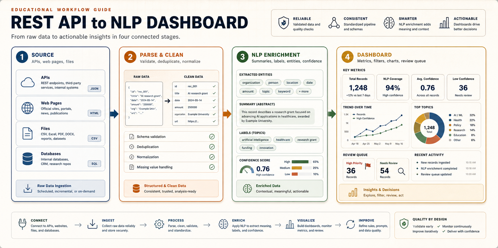
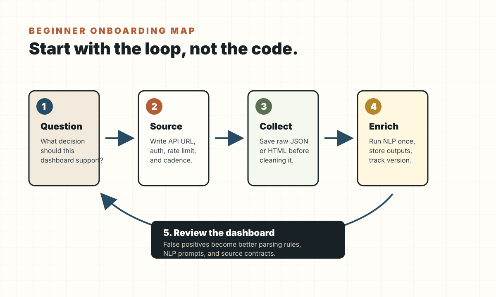
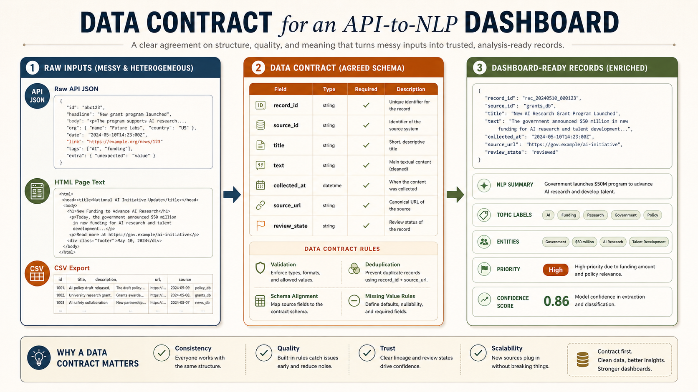
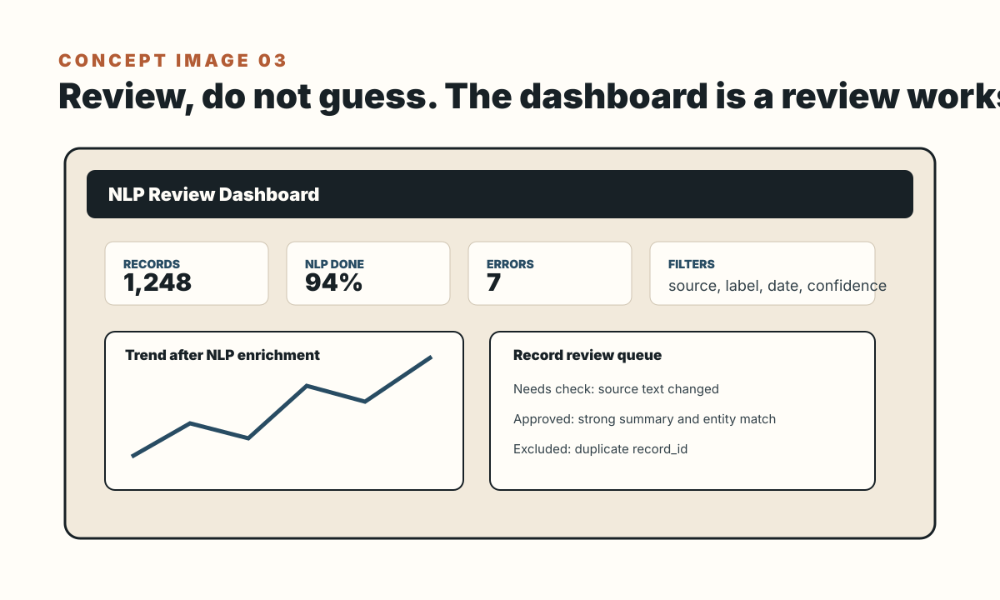
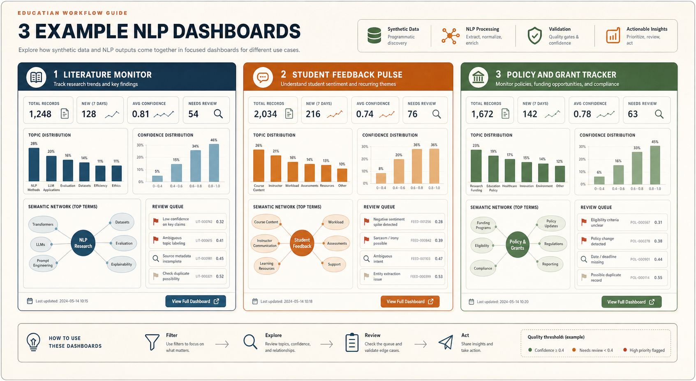
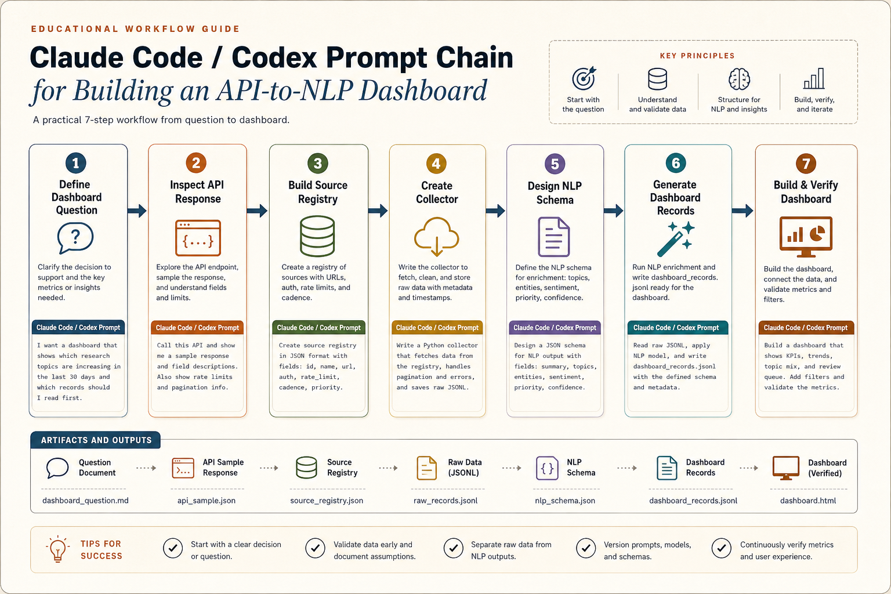
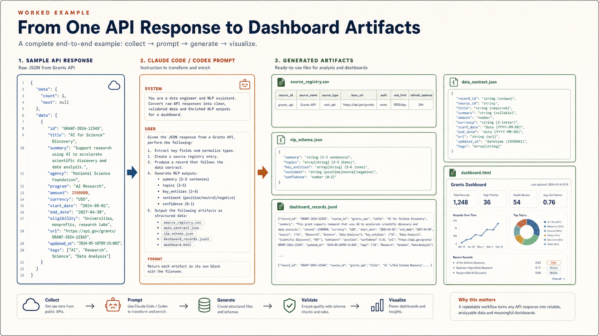
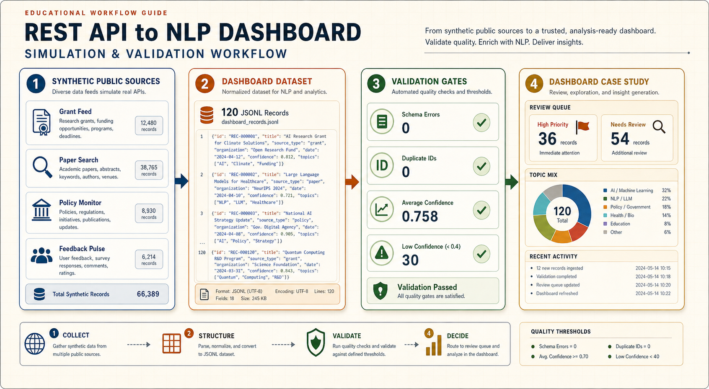
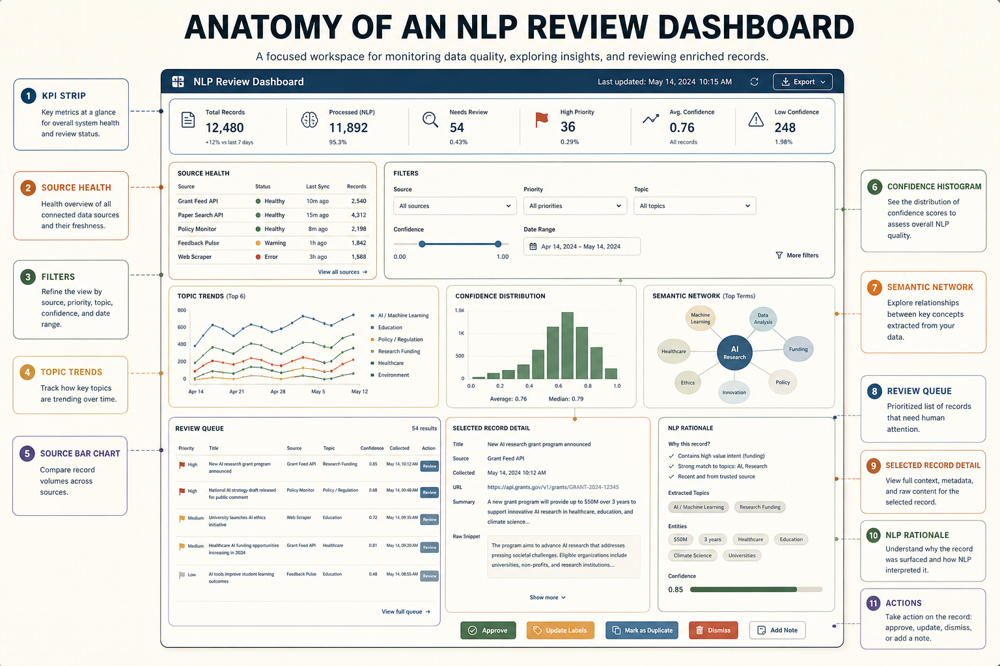

REST API에서 NLP 대시보드까지From REST API to NLP Dashboard
웹 데이터나 REST API 응답을 가져와서, 깨끗한 테이블로 정규화하고, NLP를 돌린 뒤, 내 연구/운영 대시보드로 만드는 실무형 가이드북입니다.
A practical guidebook for collecting web or REST API data, normalizing it into clean records, running NLP, and turning the results into your own research or operations dashboard.

이건 “스크래핑 코드”가 아니라 데이터 제품 워크플로우다
This is a data-product workflow, not just scraping code
좋은 대시보드는 웹에서 뭔가를 긁어온 다음 예쁜 차트를 붙인 것이 아닙니다. 소스의 법적/기술적 제약, API 응답의 구조, 텍스트 정제, NLP 버전, 검증 규칙, 사용자 의사결정이 한 줄로 이어져야 합니다.
A useful dashboard is not a scraped dataset with charts added on top. It connects source constraints, API response structure, text cleaning, NLP versioning, validation rules, and the user's decision context.
예를 들어 “웹에서 데이터를 파싱해서 내 대시보드에서 NLP를 돌린다”는 말은 실제로는 여러 개의 작은 약속으로 나뉩니다. 어떤 웹/API를 쓸지, 어떤 필드를 신뢰할지, 원본과 정제본을 어디에 저장할지, 어떤 NLP 결과를 사람이 검토할지, 대시보드가 무엇을 보여주고 무엇을 숨길지 정해야 합니다.
For example, "parse web data and run NLP in my dashboard" actually breaks into several smaller contracts: which web/API source to use, which fields to trust, where raw and cleaned data live, which NLP outputs require human review, and what the dashboard should show or hide.
이 가이드는 그 전체 흐름을 초보자도 따라갈 수 있게 설명합니다. 코드를 먼저 외우는 방식이 아니라, 왜 이런 구조가 필요한지 이해하고 나서 작은 샘플 데이터로 한 바퀴 돌려보는 방식입니다.
This guide explains the whole flow in a beginner-friendly way. Instead of memorizing code first, it starts with why the structure matters and then walks through one small loop with sample-safe data.
핵심은 “데이터를 가져오는 기술”과 “판단을 돕는 화면” 사이에 책임을 분리하는 것입니다. API 호출은 데이터를 가져오는 일이고, 파싱은 그 데이터를 같은 모양으로 만드는 일입니다. NLP는 텍스트 안에 숨어 있는 의미를 요약 가능한 신호로 바꾸는 일이고, 대시보드는 그 신호를 사람이 검토하고 행동할 수 있게 배열하는 일입니다. 이 네 가지를 한 파일이나 한 버튼 안에 섞으면 처음에는 빨라 보여도, 나중에는 어디서 오류가 났는지 알기 어렵습니다.
The key is to separate responsibilities between "getting data" and "helping people decide." API calls retrieve data. Parsing gives that data a consistent shape. NLP converts hidden meaning in text into reviewable signals. The dashboard arranges those signals so a person can inspect and act. If all four responsibilities are mixed into one file or one button, the demo may feel fast at first, but failures become hard to diagnose later.
그래서 이 워크플로우는 초보자에게도 중요합니다. 처음부터 완벽한 자동화를 만들라는 뜻이 아닙니다. 오히려 작은 단위로 나누면 “지금 문제는 API가 막힌 것인가, HTML 구조가 바뀐 것인가, NLP 프롬프트가 흔들린 것인가, 대시보드 필터가 잘못된 것인가”를 분리해서 볼 수 있습니다.
That is why the workflow matters even for beginners. It does not mean you should build perfect automation immediately. Breaking the work into stages helps you see whether the problem is the API, a changed HTML layout, an unstable NLP prompt, or a dashboard filter.
왜 굳이 이런 파이프라인이 필요한가
Why this pipeline is worth building
연구자나 교육자가 보는 웹 데이터는 대부분 “텍스트가 많은데 정리가 안 된 데이터”입니다. 논문 초록, 학생 피드백, 공개 정책 문서, 보조금 공고, 리뷰 코멘트, 포럼 글, 뉴스 릴리스는 모두 사람이 읽을 수는 있지만 바로 분석하기 어렵습니다. REST API나 웹 페이지는 데이터를 주지만, 대시보드가 바로 이해할 수 있는 형태로 주지는 않습니다.
The web data researchers and educators care about is often text-heavy but weakly structured: paper abstracts, student feedback, public policy documents, grant announcements, review comments, forum posts, and news releases. They are readable by humans, but not immediately analyzable by dashboards.
그래서 중간에 세 단계가 필요합니다. 첫째, 소스에서 원본을 안전하게 가져옵니다. 둘째, 서로 다른 형태의 응답을 같은 스키마로 정규화합니다. 셋째, NLP가 텍스트를 요약, 분류, 태깅, entity 추출, 유사도 계산처럼 대시보드가 쓸 수 있는 신호로 바꿉니다.
That is why the middle steps matter. First, collect raw data from the source safely. Second, normalize different response shapes into one stable schema. Third, use NLP to convert text into dashboard-ready signals such as summaries, labels, tags, entities, and similarity scores.
예를 들어 보조금 공고 페이지를 생각해보면, 사람은 “마감일이 언제인지, 내가 지원 가능한지, 바뀐 조건이 있는지”를 알고 싶습니다. 하지만 웹 페이지에는 제목, 본문, 메뉴, 광고, footer, PDF 링크, 표, 날짜 표현이 섞여 있습니다. API 응답도 마찬가지입니다. 어떤 응답은 body에 본문을 넣고, 어떤 응답은 description이나 abstract에 넣습니다. 이 상태로 바로 NLP를 돌리면 결과는 나와도, 어떤 결과를 믿어야 하는지 설명하기 어렵습니다.
Consider a grant announcement page. A person wants to know the deadline, eligibility, and whether requirements changed. The page itself may contain title text, body text, navigation, footer content, PDF links, tables, and inconsistent date expressions. API responses are similar: one source may store content in body, another in description or abstract. If you run NLP directly on that mess, you may get an output, but you will not know how much to trust it.
따라서 대시보드에 들어가기 전에는 “데이터 계약(data contract)”이 필요합니다. 계약은 어렵게 들리지만 단순합니다. 모든 레코드가 최소한 record_id, source_id, source_url, collected_at, title, text, nlp 같은 공통 필드를 갖도록 약속하는 것입니다. 이 약속이 있어야 대시보드가 소스가 바뀌어도 같은 방식으로 데이터를 읽을 수 있습니다.
Before data reaches the dashboard, it needs a data contract. The term sounds formal, but the idea is simple: every record should have common fields such as record_id, source_id, source_url, collected_at, title, text, and nlp. With that contract, the dashboard can read records consistently even when sources differ.
API 필드명이 바뀌거나 HTML 구조가 바뀌면 대시보드가 조용히 틀릴 수 있습니다.
If API fields or HTML structure change, a dashboard can become silently wrong.
프롬프트, 모델, 규칙이 바뀌면 같은 텍스트도 다른 결과가 나옵니다.
Changing prompts, models, or rules can change outputs for the same text.
사용자는 전체 데이터가 아니라 화면에 보이는 필터와 정렬을 통해 판단합니다.
Users judge through filters, sort orders, and visible summaries, not the full dataset.
처음 보는 사람은 이 다섯 칸만 따라오면 된다
A beginner only needs to follow these five boxes first
이 워크플로우의 핵심은 “API를 호출한다”가 아니라 “반복 가능한 루프를 만든다”입니다. 처음에는 소스가 하나, 레코드가 20개, NLP가 단순 요약이어도 괜찮습니다. 중요한 것은 각 단계의 산출물이 파일로 남고, 다음 단계가 그 파일을 읽는 구조입니다.
The core idea is not simply "call an API." The goal is to build a repeatable loop. At first, one source, twenty records, and a simple NLP summary are enough. What matters is that each step leaves an inspectable file that the next step reads.

예: “최근 30일 동안 어떤 주제가 늘고 있고, 어떤 기록을 먼저 읽어야 하는가?”
Example: "Which topics are increasing in the last 30 days, and which records should I read first?"
API URL, 인증 방식, rate limit, refresh cadence를 코드 밖에서 먼저 정리합니다.
Document API URL, auth, rate limit, and refresh cadence before writing extraction code.
원본이 있어야 파싱 오류와 소스 변경을 추적할 수 있습니다.
Keeping raw data lets you diagnose parsing errors and source changes.
모델, 프롬프트, 규칙이 바뀌면 같은 텍스트도 다른 label을 가질 수 있습니다.
When models, prompts, or rules change, the same text can receive different labels.
사용자가 false positive를 찾고, 그 피드백이 다시 파싱/NLP 규칙으로 돌아가야 합니다.
Users should find false positives, and that feedback should return to parsing and NLP rules.


먼저 “무슨 판단을 돕는가”를 정한다
Start with the decision the dashboard should support
새 글, 새 이슈, 새 정책, 새 논문을 정기적으로 추적.
Track new posts, issues, policies, papers, or records over time.
소스, 기간, 기관, 주제별 차이를 비교.
Compare sources, time periods, institutions, topics, or stakeholder groups.
읽어야 할 항목, 대응해야 할 항목, 검토할 위험을 정렬.
Rank records to read, respond to, review, or exclude.
이 질문이 없으면 대시보드는 금방 “모든 것을 보여주는 화면”이 됩니다. 하지만 모든 것을 보여주는 화면은 실제로는 아무 판단도 돕지 못합니다. 처음에는 하나의 사용자, 하나의 판단, 하나의 refresh cadence를 정하세요.
Without this question, the dashboard quickly becomes a screen that shows everything. A screen that shows everything usually supports no decision well. Start with one user, one decision, and one refresh cadence.
같은 파이프라인으로 만들 수 있는 대시보드 예시
Dashboard examples from the same pipeline
아래 세 예시는 같은 구조를 씁니다. 소스에서 텍스트를 가져오고, 스키마를 맞추고, NLP를 돌린 다음, 사람이 무엇을 해야 하는지 중심으로 화면을 구성합니다. 차이는 “무슨 판단을 돕는가”입니다.
The three examples below share the same structure: collect text from a source, normalize it, run NLP, and organize the screen around what a person should do next. The difference is the decision being supported.
여기서 중요한 점은 대시보드가 “모든 데이터를 보여주는 곳”이 아니라는 것입니다. 좋은 대시보드는 사용자가 해야 할 다음 행동을 좁혀줍니다. 논문 모니터라면 “읽을 가치가 높은 20개 초록”을 골라주고, 학습자 피드백 대시보드라면 “다음 수업 전에 고쳐야 할 혼란 지점”을 보여주고, 정책 트래커라면 “마감과 자격 변화 때문에 대응이 필요한 항목”을 앞에 둡니다.
The important point is that a dashboard is not a place to show all data. A good dashboard narrows the user's next action. A literature monitor surfaces the twenty abstracts worth reading. A student feedback dashboard highlights confusion points to address before the next class. A policy tracker prioritizes deadlines and eligibility changes that require action.
논문 초록과 메타데이터를 모아 새로 떠오르는 주제, 방법론, 기관, 저자를 보여줍니다. 목적은 “무엇을 먼저 읽을까?”입니다.
Collects abstracts and metadata to show emerging topics, methods, institutions, and authors. The decision is: what should I read first?
설문과 토론 글에서 어려움, 감정, 혼란 지점을 요약합니다. 목적은 “다음 수업 전에 무엇을 고칠까?”입니다.
Summarizes survey and discussion text into issues, sentiment, and confusion points. The decision is: what should I adjust before the next class?
공고와 정책 페이지에서 마감, 자격, 변경사항을 추출합니다. 목적은 “대응할까, 무시할까, 위임할까?”입니다.
Extracts deadlines, eligibility, and changes from announcements and policy pages. The decision is: act, ignore, or delegate?

| Example | Source | NLP layer | User decision |
|---|---|---|---|
| 논문·초록 모니터Literature monitor | OpenAlex, Crossref, proceedings API, journal RSSOpenAlex, Crossref, proceedings APIs, journal RSS | 주제, 방법론, entity, 초록 요약Topics, methods, entities, abstract summaries | 어떤 논문을 먼저 읽을지 결정Decide which papers to read first |
| 학습자 피드백 펄스Student feedback pulse | Qualtrics, LMS export, discussion postsQualtrics, LMS exports, discussion posts | 감정, 어려움 유형, 대표 인용문, 모듈 태그Sentiment, issue type, representative quotes, module tags | 다음 수업 전 어떤 부분을 수정할지 결정Decide what to adjust before the next class |
| 정책·공고 트래커Policy or announcement tracker | 기관 웹페이지, 보조금 공고, 정책 업데이트 피드Institution pages, grant announcements, policy update feeds | 변경 유형, 마감일, 영향 대상, action memoChange type, deadline, affected actor, action memo | 대응, 무시, 위임 중 무엇을 할지 결정Decide whether to act, ignore, or delegate |
Claude Code/Codex에는 “한 번에 만들어줘”가 아니라 체인으로 시킨다
Use a prompt chain, not a single "make everything" prompt
이 워크플로우의 실전 핵심은 프롬프트를 단계별로 나누는 것입니다. Claude Code나 Codex에게 처음부터 “REST API로 데이터 가져와서 NLP 대시보드 만들어줘”라고 하면, 대개 그럴듯한 앱은 나오지만 데이터 계약, 오류 처리, NLP 검증, 대시보드 검토 흐름이 빠지기 쉽습니다. 대신 아래처럼 질문 정의 → API 샘플 검사 → 데이터 계약 → collector → NLP schema → dashboard UI → QA 순서로 좁혀가야 합니다.
The practical core of this workflow is prompt sequencing. If you ask Claude Code or Codex to "build a REST API NLP dashboard" in one step, you may get a plausible app, but the data contract, error handling, NLP validation, and review workflow will often be weak. Instead, narrow the work through question -> API sample -> data contract -> collector -> NLP schema -> dashboard UI -> QA.

프롬프트 1: 대시보드 질문을 데이터 요구사항으로 바꾸기
Prompt 1: Convert the dashboard question into data requirements
이 단계에서는 코드가 아니라 “무엇을 만들지”를 뽑습니다. 여기서 나오는 산출물은 pipeline-spec.md의 초안이 됩니다. 좋은 답변은 “필요한 필드”와 “대시보드 패널”을 연결해야 합니다. 예를 들어 published_at은 trend chart에, source_id는 source health panel에, nlp.priority는 review queue에 연결됩니다.
This step extracts what should be built, not code. The output becomes the first draft of pipeline-spec.md. A good answer connects required fields to dashboard panels: published_at powers trend charts, source_id powers source health, and nlp.priority powers the review queue.
프롬프트 2: API 응답 샘플을 보고 데이터 계약 만들기
Prompt 2: Inspect an API sample and create the data contract
이 프롬프트는 “API가 주는 모양”을 “대시보드가 읽을 모양”으로 바꿉니다. 여기서 중요한 것은 원본 구조를 지우지 않는 것입니다. 원본은 raw/에 저장하고, 대시보드가 읽는 구조는 dashboard_records.jsonl로 따로 만듭니다.
This prompt translates the API's shape into the dashboard's shape. The key is not to erase raw structure. Store raw payloads in raw/ and write dashboard-ready records separately as dashboard_records.jsonl.
프롬프트 3: NLP structured output schema 만들기
Prompt 3: Design the NLP structured output schema
LLM에게 “요약해줘”라고만 하면 대시보드가 안정적으로 읽기 어렵습니다. 대신 summary, topic_labels, entities, priority, review_reason, confidence처럼 필드를 고정해야 합니다.
If you only ask an LLM to "summarize," the dashboard has little stable structure to read. Fix fields such as summary, topic_labels, entities, priority, review_reason, and confidence.
프롬프트 4: 대시보드 UI를 구현 가능한 스펙으로 바꾸기
Prompt 4: Turn the dashboard into an implementable UI spec
이 프롬프트가 “대시보드 생내용”을 만듭니다. 즉 화면 이름, 각 화면이 읽는 필드, 필터, 차트, 테이블, 버튼, empty state, error state를 명시합니다. 이 수준까지 내려가야 Claude Code/Codex가 그럴듯한 페이지가 아니라 실제로 쓸 수 있는 대시보드를 만듭니다.
This prompt creates the dashboard substance: page names, fields, filters, charts, tables, buttons, empty states, and error states. At this level, Claude Code/Codex can build a usable dashboard rather than a decorative page.
실제 예시: API 응답 하나에서 대시보드 산출물까지
Worked example: from one API response to dashboard artifacts
아래 예시는 정책·공고 트래커를 만든다고 가정합니다. 목표는 공고 페이지나 API에서 새 항목을 가져와서, 변경 유형과 마감일을 추출하고, 사람이 검토해야 할 항목을 대시보드에 올리는 것입니다. Claude Code/Codex가 해야 할 일은 단순히 코드를 쓰는 것이 아니라, 여러 개의 산출물을 함께 만드는 것입니다.
This example assumes a policy or announcement tracker. The goal is to collect new records from an API or public page, extract change type and deadline information, and place review-worthy items in a dashboard. Claude Code/Codex should not only write code; it should generate a set of connected artifacts.

| Artifact | What Claude/Codex extracts | Why dashboard needs it |
|---|---|---|
source_registry.csv | 엔드포인트, 인증, 페이지네이션, refresh cadence, 소유자.Endpoint, auth, pagination, refresh cadence, owner. | 소스별 freshness와 오류를 표시하기 위해.To show source freshness and errors. |
data_contract.json | 필드명, 타입, required 여부, 결측 처리, record_id 규칙.Field names, types, required status, missing-value rules, record_id strategy. | 대시보드가 안정된 스키마만 읽도록 하기 위해.So the dashboard reads a stable schema. |
nlp_schema.json | summary, entity, topic, priority, reason, confidence.Summary, entity, topic, priority, reason, confidence. | review queue와 record detail panel을 만들기 위해.To power the review queue and record detail panel. |
dashboard_records.jsonl | 정규화된 레코드 + NLP 결과. 한 줄에 한 레코드.Normalized records plus NLP outputs, one record per line. | Streamlit/Dash/React가 바로 읽는 데이터.The data read directly by Streamlit, Dash, or React. |
streamlit_dashboard.py | overview, records, review queue, source health 화면.Overview, records, review queue, source health pages. | 실제로 탐색하고 검토하는 대시보드 앱.The app used for exploration and review. |
시뮬레이션 데이터로 검증한 인터랙티브 대시보드 케이스스터디
Interactive dashboard case study with validated simulation data
아래 케이스는 실제 개인정보나 비공개 데이터를 쓰지 않고, 공개 소스 모니터링 상황을 합성 데이터로 재현한 것입니다. grant feed, paper search, policy monitor, feedback pulse 네 개의 소스에서 120개 레코드가 들어온다고 가정하고, 각 레코드에 NLP 요약, topic label, entity, priority, confidence, review reason을 붙였습니다. 이 데이터는 단순 샘플이 아니라 스키마, 중복, 신뢰도, 리뷰큐 라우팅을 검증한 뒤 대시보드에 넣었습니다.
대시보드에는 주제별 바그래프, 소스별 바그래프, confidence histogram, semantic network를 넣었습니다. semantic network는 topic과 key phrase가 같은 레코드에서 함께 등장한 관계를 보여주며, 노드를 누르면 해당 단어로 필터가 걸립니다. 즉 “무슨 주제가 많은가”만 보는 것이 아니라, 어떤 개념들이 같이 묶여서 review queue를 만드는지 확인할 수 있습니다.
This case uses synthetic data instead of private or sensitive records. It simulates 120 records from four public-monitoring sources: grant feed, paper search, policy monitor, and feedback pulse. Each record includes NLP summary, topic labels, entities, priority, confidence, and review reason. The data is validated before it enters the dashboard.
The dashboard is structured as an operations console, not a simple chart gallery. It includes source-health cards, KPI triage, topic trend lines, topic and source bar graphs, a confidence histogram, a semantic network, priority-confidence scatter, validation gates, recent pipeline activity, a review queue, selected-record evidence, NLP rationale, and action buttons. The semantic network connects topics and key phrases that co-occur in the same records, and clicking a node filters the dashboard by that term.

| Validation gate | Result | Interpretation |
|---|---|---|
| Records generated | 120 | 20-50개보다 큰 테스트라 필터, 큐 정렬, 소스 분포를 확인할 수 있음.Large enough to test filters, queue ordering, and source mix. |
| Schema errors | 0 | 대시보드가 요구하는 필드가 모두 존재함.All dashboard-required fields are present. |
| Duplicate IDs | 0 | record_id가 안정적이라 trend와 count가 부풀지 않음.Stable IDs prevent inflated trends and counts. |
| Average confidence | 0.758 | 자동 분류를 바로 믿지 않고 low-confidence 항목을 따로 노출해야 함.Low-confidence items should remain visible for human checking. |
| High priority | 36 | 리뷰 큐의 첫 작업량을 정의함.Defines the first review workload. |
| Needs review | 54 | 대시보드가 단순 시각화가 아니라 검토 작업대로 쓰이는 이유.Shows why the dashboard is a review workspace, not just visualization. |
| Dashboard panels | 12 | source health, KPI, topic trend, topic bar, source bar, confidence histogram, semantic network, scatter, validation, activity, review queue, record detail.Source health, KPIs, topic trend, topic bar, source bar, confidence histogram, semantic network, scatter, validation, activity, review queue, and record detail. |
검증을 깊게 하는 방법
How to deepen verification
첫째, 데이터 계약 검증입니다. 모든 record가 record_id, source_id, text, review_state, nlp.summary, nlp.priority, nlp.confidence를 갖는지 확인합니다. 둘째, 중복 검증입니다. 같은 공고나 논문이 여러 소스에서 들어오면 count와 trend가 부풀기 때문에 record_id 전략을 검사해야 합니다. 셋째, NLP 검증입니다. confidence가 낮은 항목, priority가 높지만 review_state가 빠진 항목, review_reason이 비어 있는 항목을 따로 잡아냅니다. 넷째, UI 검증입니다. 필터를 바꿔도 KPI, 차트, 리뷰큐, 상세 패널이 같은 데이터 slice를 보고 있어야 합니다.
Deep verification has four layers. First, validate the data contract: every record needs stable identifiers, source fields, review state, and required NLP outputs. Second, check duplicates because repeated records inflate counts and trends. Third, inspect NLP outputs: low confidence, high-priority records without review routing, and missing review reasons should be visible. Fourth, verify the UI so KPIs, charts, queue, and detail panels all read the same filtered slice.
API가 있으면 API를 먼저 쓰고, HTML 파싱은 보조로 둔다
Use an API first when one exists; treat HTML parsing as a fallback
| Layer | Use when | Watch for |
|---|---|---|
| REST JSON API | 공식 엔드포인트, 페이지네이션, 필터가 있음.Official endpoints, pagination, and filters exist. | 인증, rate limit, 응답 스키마 변화.Authentication, rate limits, schema drift. |
| HTML parsing | 공개 페이지에만 필요한 텍스트가 있음.The needed text exists only on public pages. | 약관, robots, 레이아웃 변경, boilerplate.Terms, robots, layout changes, boilerplate. |
| Scrapy-style crawl | 여러 페이지를 일정한 규칙으로 따라가야 함.You need to follow many pages with clear rules. | 중복 제거, 저장소, 실패 재시도.Deduplication, persistence, retry behavior. |
대시보드 앞에 반드시 중간 데이터층을 둔다
Put a data layer in front of the dashboard
대시보드 콜백 안에서 API를 계속 호출하거나 NLP를 새로 돌리면 느리고, 재현이 안 되고, 오류 추적이 어렵습니다. 수집, 정규화, NLP, 시각화를 분리하면 디버깅과 논문화가 쉬워집니다.
If the dashboard callback keeps calling APIs or rerunning NLP, it becomes slow, hard to reproduce, and difficult to debug. Separate collection, normalization, NLP, and visualization so the work is inspectable.
실무적으로는 raw/, processed/, nlp/, dashboard/ 폴더를 분리하는 것이 좋습니다. raw/에는 원본 JSON, HTML, CSV를 날짜별로 저장합니다. processed/에는 같은 스키마로 맞춘 테이블을 둡니다. nlp/에는 모델명, 프롬프트 버전, 처리 시간을 포함한 NLP 결과를 둡니다. dashboard/는 이 결과만 읽습니다. 이렇게 하면 대시보드가 예뻐지는 것보다 먼저 “무엇을 읽고 있는지”가 명확해집니다.
In practice, separate raw/, processed/, nlp/, and dashboard/. Store original JSON, HTML, or CSV in raw/ by date. Store normalized tables in processed/. Store NLP outputs with model name, prompt version, and processing time in nlp/. Let the dashboard read only those results. This makes the system understandable before it becomes visually polished.
파싱의 목표는 “예쁜 텍스트”가 아니라 안정된 스키마다
The goal of parsing is a stable schema, not pretty text
pandas.json_normalize로 nested API 응답을 테이블로 펴고, 필수 키가 없을 때의 처리 규칙을 정합니다.
Use pandas.json_normalize to flatten nested API responses into tables and define missing-key behavior.
스크립트, 메뉴, footer 같은 boilerplate를 제거하고 제목, 본문, 원본 URL, 수집 시간을 보존합니다.
Remove scripts, navigation, footer boilerplate, and preserve title, body text, source URL, and collection time.
NLP는 한 번에 다 하지 말고, 값싼 것부터 쌓는다
Build NLP in layers, starting with cheaper signals
| Layer | Good for | Dashboard output |
|---|---|---|
| Rules / lexicons | 빠른 필터, 금칙어, 단순 분류.Fast filters, blocklists, simple labels. | 플래그, 태그, 제외 사유.Flags, tags, exclusion reasons. |
| spaCy pipeline | 토큰화, NER, 문장 분리, 대량 처리.Tokenization, NER, sentence splitting, batch processing. | entity table, phrase counts.Entity tables and phrase counts. |
| Embeddings | 유사도, 클러스터, semantic search.Similarity, clustering, semantic search. | 관련 기록 추천, 주제 지도.Related records and topic maps. |
| LLM structured output | 요약, 스키마 기반 코딩, 사람이 검토할 초안.Summaries, schema-based coding, human-review drafts. | summary, rationale, confidence note.Summary, rationale, confidence note. |
처음부터 LLM으로 모든 것을 해결하려고 하면 비용과 검증 부담이 커집니다. 간단한 필터와 규칙으로 제거할 수 있는 것은 먼저 제거하고, spaCy 같은 파이프라인으로 토큰화와 entity 추출을 처리한 뒤, LLM은 요약이나 복잡한 분류처럼 맥락 이해가 필요한 지점에 쓰는 편이 좋습니다. 이렇게 하면 LLM 호출 수가 줄고, 사람이 검토해야 할 결과도 명확해집니다.
Do not ask the LLM to solve everything at the beginning. Use simple filters and rules first, use a pipeline such as spaCy for tokenization and entities, and reserve LLM calls for tasks that need contextual judgment, such as summaries or nuanced classification. This reduces cost and makes human review more focused.
NLP 대시보드는 어떤 패널로 이루어져야 하나
What panels an NLP dashboard should contain
대시보드는 차트 모음이 아니라 “검토 작업대”입니다. REST API와 웹 데이터에서 나온 텍스트는 NLP를 거치면 여러 신호로 바뀝니다. 이 신호를 화면에 올릴 때는 사용자가 어디서 시작하고, 무엇을 좁히고, 어떤 레코드를 열고, 어떤 행동을 할지 순서가 있어야 합니다.
The dashboard is not a chart collection; it is a review workspace. Text from REST APIs and web pages becomes a set of signals after NLP. The screen should guide the user through where to start, how to narrow the data, which record to inspect, and what action to take.

| Panel | Fields it reads | Purpose |
|---|---|---|
| KPI strip | record_id, collected_at, nlp.confidence, review_state | 오늘 수집량, 처리율, 검토 대기량을 한눈에 보여줌.Shows volume, completion, and review workload at a glance. |
| Source health | source_id, last_success_at, error_count | 데이터가 최신인지, API가 실패 중인지 확인.Checks whether data is fresh and whether sources are failing. |
| Filters | source_id, date, topic_labels, priority | 전체 데이터를 읽지 않고 필요한 범위로 좁힘.Narrows the dataset without reading everything. |
| Review queue | priority, review_reason, confidence | 사람이 먼저 봐야 할 항목을 정렬.Ranks records that require human attention. |
| Selected record detail | title, text, summary, entities | 한 레코드의 원문 근거와 NLP 결과를 함께 확인.Shows source evidence and NLP outputs for one selected record. |
| Actions | review_state, assigned_to, notes | approve, exclude, assign, export 같은 후속 행동을 기록.Records actions such as approve, exclude, assign, and export. |
대시보드는 분석기가 아니라 검토 인터페이스다
The dashboard is a review interface, not the analysis engine
수집 건수, NLP 처리율, 최신 갱신, 오류 수.
Collected records, NLP completion, latest refresh, error count.
소스, 날짜, label, entity, confidence.
Source, date, label, entity, confidence.
트렌드, 키워드, entity table, record explorer.
Trends, keywords, entity table, record explorer.
new, needs check, approved, excluded.
New, needs check, approved, excluded.
대시보드의 첫 화면은 “전체 데이터 요약”보다 “오늘 사용자가 무엇을 해야 하는가”를 보여주는 편이 좋습니다. 예를 들어 최신 수집 건수, NLP 처리율, 오류 수, 검토 대기 항목, 신뢰도 낮은 항목, 새로 등장한 주제를 함께 보여주면 사용자가 바로 판단할 수 있습니다. 반대로 원본 텍스트 전체를 첫 화면에 길게 펼치면 대시보드는 다시 읽기 노동으로 돌아갑니다.
The first screen should show what the user needs to do today, not merely summarize the dataset. Useful first-screen signals include new records, NLP completion, error count, review queue, low-confidence items, and emerging topics. If the dashboard opens with long raw text, it turns back into manual reading labor.
권장 실행 순서
Recommended run order
처음에는 자동화를 끝까지 만들기보다, 20-50개 레코드로 “소스 -> 파싱 -> NLP -> 화면” 루프가 한 번 도는지 확인하는 것이 더 빠릅니다.
At the beginning, do not automate everything. Run a 20-50 record slice through source -> parsing -> NLP -> screen first.
운영에서 무너지는 지점은 대부분 품질 로그다
Most operational failures are quality-log failures
| Check | Why it matters |
|---|---|
| HTTP status + retry log | API 실패인지 파싱 실패인지 구분.Distinguishes API failures from parsing failures. |
| Schema validation | 대시보드가 조용히 잘못된 열을 읽는 문제 방지.Prevents the dashboard from silently reading wrong columns. |
| Deduplication key | 동일 기록이 트렌드와 빈도를 부풀리는 문제 방지.Prevents duplicated records from inflating trends and counts. |
| NLP version field | 모델/프롬프트 변경 전후 결과를 비교 가능하게 함.Makes results comparable before and after model or prompt changes. |
바로 복제해서 시작할 파일
Files to fork and adapt
{kind=link}
{kind=link}
{kind=link}
{kind=link}
{kind=link}
{kind=link}
{kind=link}
FAQ
대시보드를 Streamlit으로 만들까요, Dash/React로 만들까요?Should I build the dashboard in Streamlit, Dash, or React?
빠르게 연구용 내부 도구를 만들면 Streamlit이 좋고, Python 콜백 구조와 복잡한 상호작용이 필요하면 Dash가 좋습니다. 이미 React 앱이 있거나 공개 제품처럼 다듬을 예정이면 React/Vite 쪽이 맞습니다.
Streamlit is strong for quick internal research tools. Dash is useful when Python callbacks and complex interactions matter. React/Vite is better when the dashboard is part of a polished public product.
LLM이 분류한 결과를 그대로 믿어도 되나요?Can I trust LLM-coded labels directly?
아니요. 구조화 출력, 샘플링 검토, 불확실성 표시, 사람 검토 상태가 필요합니다. 논문용이면 코딩 기준과 validation sample을 따로 남겨야 합니다.
No. Use structured outputs, sampled review, uncertainty flags, and human review states. For research publication, keep coding rules and validation samples.
HTML 스크래핑부터 하면 안 되나요?Can I start with HTML scraping?
가능하지만 공식 API가 있으면 API가 우선입니다. HTML은 레이아웃 변경에 약하고, 메뉴/footer 같은 잡음이 많습니다. HTML을 써야 한다면 selector, boilerplate 제거 규칙, 실패 로그를 함께 남겨야 합니다.
You can, but official APIs should come first when available. HTML parsing is more brittle and often includes navigation/footer noise. If HTML is required, keep selectors, boilerplate-removal rules, and failure logs.
내 대시보드에서 실시간으로 NLP를 돌리면 안 되나요?Can the dashboard run NLP live?
작은 데모는 가능하지만 운영/연구용은 비추천입니다. 비용, 지연, 재현성, 실패 처리 때문에 NLP는 별도 배치 단계로 두는 편이 좋습니다. 대시보드는 준비된 dashboard_records.jsonl을 읽고, 모델 호출은 버전이 남는 파이프라인에서 처리하세요.
For a tiny demo, yes. For operational or research use, it is usually better to run NLP as a separate batch step because of cost, latency, reproducibility, and failure handling. Let the dashboard read prepared dashboard_records.jsonl and keep model calls in a versioned pipeline.
Semantic network와 bar graph는 무엇을 보여줘야 하나요?What should the semantic network and bar graphs show?
Bar graph는 사용자가 바로 비교해야 하는 count를 보여줍니다. 예를 들어 topic별 레코드 수, source별 수집량, priority 분포가 좋습니다. Semantic network는 topic과 key phrase가 함께 등장한 관계를 보여줍니다. 노드 크기는 빈도, edge 두께는 함께 등장한 횟수로 잡으면 해석이 쉽습니다.
Bar graphs should show counts the user needs to compare immediately, such as records by topic, records by source, and priority mix. The semantic network should connect co-occurring topics and key phrases. Node size can represent frequency, and edge width can represent co-occurrence count.
시뮬레이션 데이터로 검증하면 무엇을 봐야 하나요?What should I verify with simulation data?
최소한 schema error 0, duplicate ID 0, low-confidence 항목 표시, high-priority review queue 정렬, source health 표시, 모바일 overflow 0을 확인해야 합니다. 이 가이드의 케이스스터디는 120개 synthetic record로 이 항목을 검증합니다.
At minimum, verify zero schema errors, zero duplicate IDs, visible low-confidence items, sorted high-priority review queue, source health visibility, and zero mobile overflow. The case study in this guide checks those items with 120 synthetic records.
벤치마킹한 공식/기초 자료
Official and foundational sources used for benchmarking
- Requests Quickstart - HTTP requests, JSON response handling, and
raise_for_status(). - pandas.json_normalize - flattening semi-structured JSON into tables.
- Scrapy Item Pipeline - cleansing, validation, deduplication, and storage after extraction.
- spaCy Processing Pipelines - tokenization, components, batching with
nlp.pipe, and disabling unnecessary components. - OpenAI Structured Outputs - schema-constrained LLM outputs for reliable downstream use.
- Streamlit Data Elements - displaying dataframes, metrics, JSON, and charts.
- Dash Basic Callbacks and Dash Background Callbacks - interactive dashboard callbacks and long-running work separation.